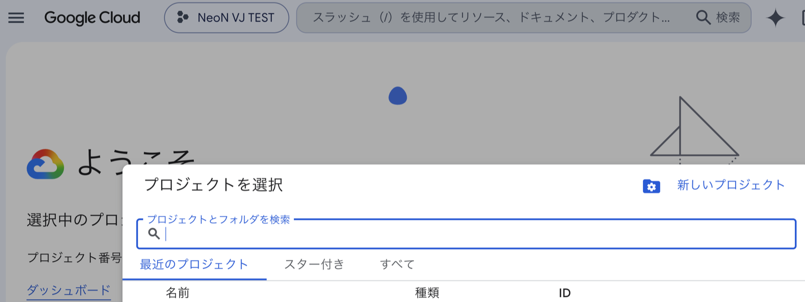
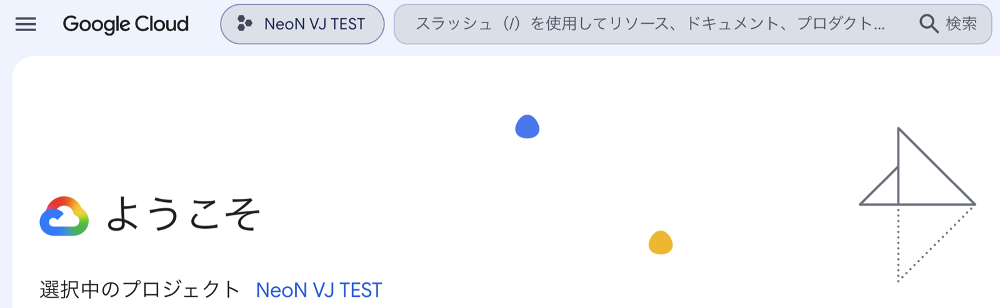
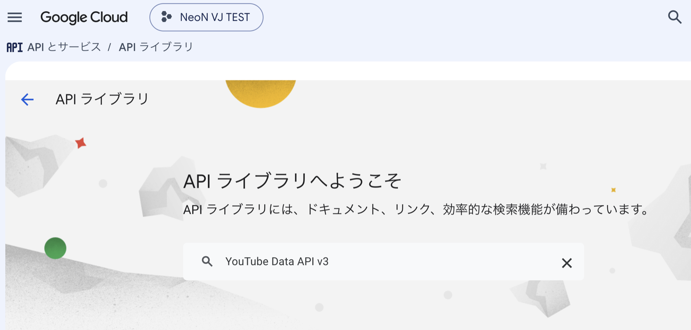
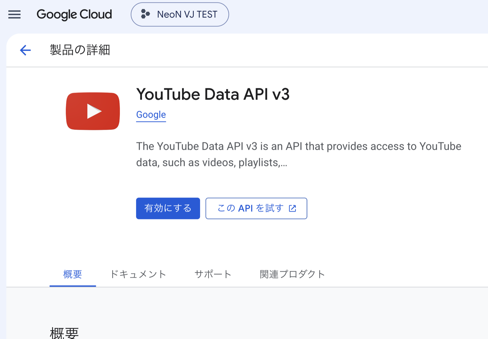
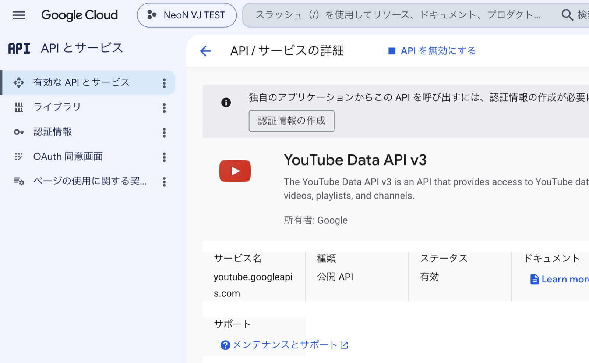
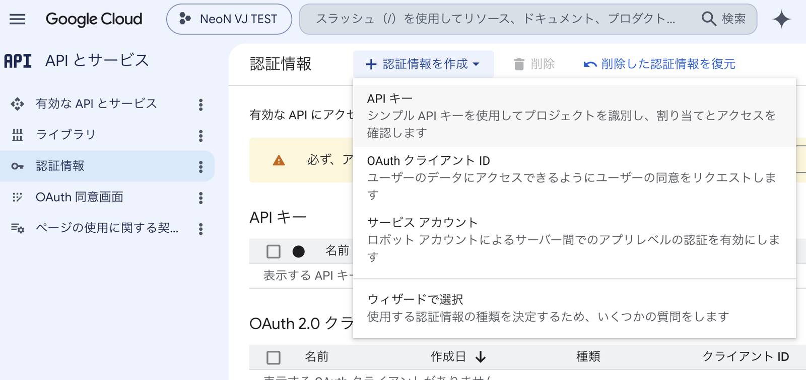
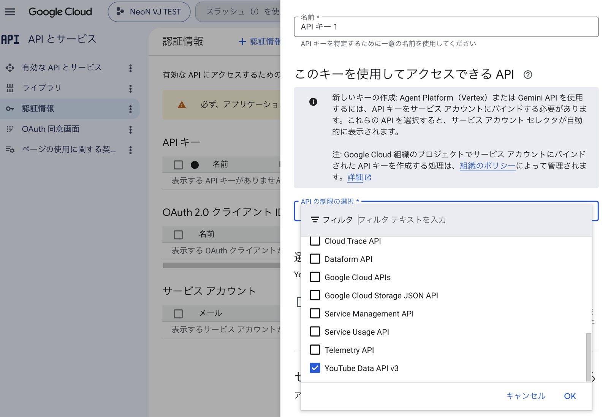
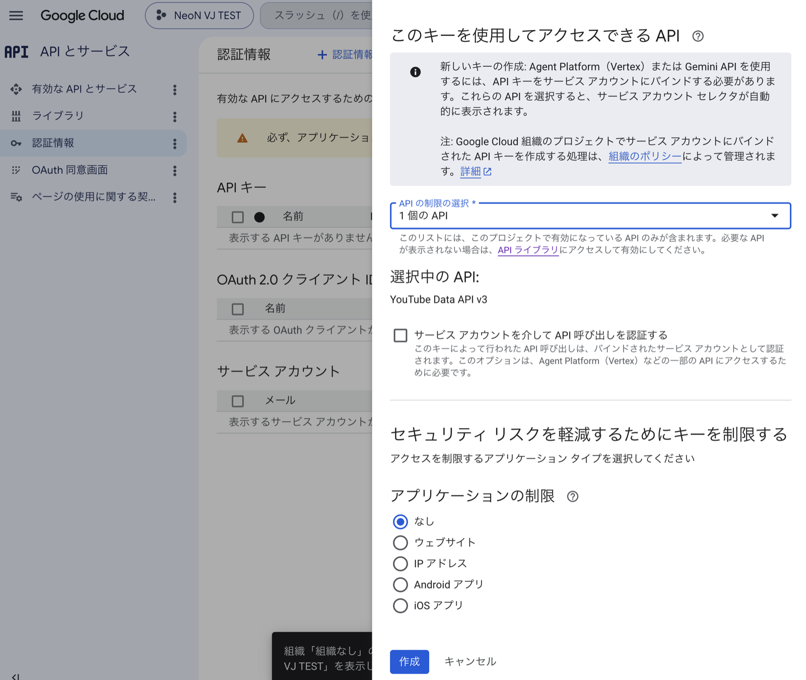
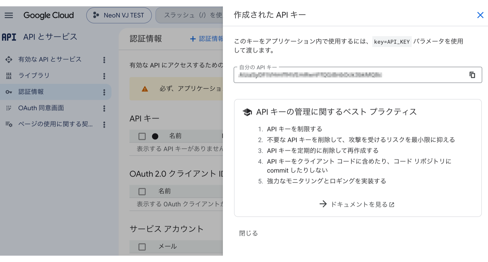

YouTube APIキー取得ガイド
YouTube動画背景を使うための準備 — はじめての方向けに、ひとつずつ説明します
このページでやること
NeoN VJ の「YouTube動画背景」は、認識した曲のミュージックビデオを YouTube から探して背景に表示する機能です。この「探す」働きに使うのが APIキー — YouTube のデータ検索を利用するための、あなた専用の合鍵 のようなものです。
このページでは、Google のサイトで APIキーを作り、NeoN VJ に設定するまでを説明します。
はじめる前に知っておいてほしいこと
所要時間はおよそ15分 です料金はかかりません 。クレジットカードの登録も不要です必要なのは Google アカウント （Gmail や YouTube で使っているもの）だけです
途中で「API」「プロジェクト」といった聞き慣れない言葉が出てきますが、その都度説明します。意味が分からなくても手順どおりに進めば完成します
💡 このページの画面写真は日本語表示の Google Cloud です。ボタンの名前や場所は Google 側の更新で変わることがあります。見つからないときは、似た意味のボタンを探すか、画面内の検索を使ってください。
手順1: Google アカウントを確認する
普段 Gmail や YouTube を使っている方は、そのアカウントがそのまま使えます。新しく作る必要はありません。
Google アカウントをお持ちでない場合は、先に Google アカウントの作成 （無料）を済ませてください。
手順2: Google Cloud Console を開く
「Google Cloud Console」は、Google が提供するサービスの管理画面です。開発者向けの画面なので見た目は少し硬いですが、使うのはごく一部だけです。
ブラウザ（iPad の Safari でも OK）で console.cloud.google.com を開きます
Google アカウントでログインします
初回は利用規約への同意画面が出るので、内容を確認してチェックを入れ、「同意して続行」 を押します
💡 「無料トライアル」や「請求先アカウント」の案内が表示されることがありますが、登録しなくて大丈夫です 。このガイドの範囲では料金は発生しません。案内は閉じて進んでください。
手順3: プロジェクトを作る
「プロジェクト」は、Google Cloud の中の作業用フォルダ のようなものです。APIキーはこのフォルダの中に作ります。
画面上部のプロジェクト名のボタンを押します。下の画像で「NeoN VJ TEST」と表示されている場所 です（初めての場合は「プロジェクトの選択」と表示されています）
「プロジェクトを選択」 という画面が開くので、右上の 「新しいプロジェクト」 を押します

「プロジェクトを選択」画面の右上にある「新しいプロジェクト」を押す
プロジェクト名を入力します。名前は自由です（例: NeoN VJ）。「場所」は「組織なし」のままで OK
「作成」 を押し、少し待ちます作成できたら、画面上部の「プロジェクトの選択」からいま作ったプロジェクトを選びます 。画面の上部に選んだプロジェクト名が表示されていれば OK です（下の画像の枠内）。ここを忘れると次の手順で迷子になります

プロジェクトが選ばれた状態。上部のボタンと「選択中のプロジェクト」に自分のプロジェクト名が出ていれば OK（この例では「NeoN VJ TEST」）
手順4: YouTube Data API v3 を有効にする
「API」という言葉が出てきますが、ここでは「YouTube の動画を探す機能を、あなたのプロジェクトで使えるようにするスイッチ 」だと思ってください。
画面左上のメニュー（☰）から 「APIとサービス」→「ライブラリ」 を選びます
「API ライブラリへようこそ」の画面が出たら、検索欄に YouTube Data API v3 と入力して検索します

「API ライブラリへようこそ」の検索欄に入力
検索結果の 「YouTube Data API v3」 （赤い再生マークのアイコン）を押し、「有効にする」 ボタンを押します

「有効にする」を押す（隣の「この API を試す」は使いません）
画面が切り替わり、「ステータス: 有効」と表示されたらこの手順は完了です。上部に「認証情報の作成が必要」というお知らせが出ますが、次の手順で作るのでそのままで OK です

有効化が完了した状態（ステータス: 有効）
手順5: APIキーを作る
いよいよキーを作ります。作成画面では、ついでにキーの保護設定（おすすめ） もこの場で済ませます。
左のメニューから 「認証情報」 を選びます（メニューに見当たらないときは ☰ →「APIとサービス」→「認証情報」）
上部の 「＋ 認証情報を作成」 を押し、「API キー」 を選びます

「＋ 認証情報を作成」→ 一番上の「API キー」を選ぶ
キーの設定画面が開きます。「名前」は API キー 1 のままで構いません
（おすすめ） 「このキーを使用してアクセスできる API」の 「API の制限の選択」 を押し、一覧から 「YouTube Data API v3」だけ にチェックを入れて 「OK」 を押します。万一キーが漏れたときに、他の用途に悪用されるのを防ぐ保険です

一覧の一番下あたりにある「YouTube Data API v3」にチェック →「OK」
「アプリケーションの制限」は「なし」のまま にしてください（変更すると NeoN VJ から使えなくなる場合があります）一番下の 「作成」 を押します

「アプリケーションの制限」は「なし」→「作成」
「作成された API キー」 という画面が出ます。「自分の API キー」欄に AIza... で始まる長い文字列が表示されるので、右のコピーボタン でコピーし、「閉じる」 を押します

これがあなたの APIキー。コピーして「閉じる」（あとから「認証情報」画面でいつでも確認できます）
⚠️ APIキーは他人に教えないでください 。SNS やスクリーンショットでうっかり公開してしまった場合は、「認証情報」画面からそのキーを削除し、新しく作り直せば安全です。
手順6: NeoN VJ に設定する
NeoN VJ の 設定 を開き、「設定メニューをすべて表示する」 を ON にします
「YouTube動画背景」 の欄にある入力欄に、コピーした APIキーを貼り付けます「保存して確認」 を押します。アプリが自動でキーの状態をチェックします✅ が表示されたら設定完了 です。機能を ON にしてお楽しみください
💡 パソコンでキーを取得した場合は、メモアプリや AirDrop などで iPad に文字列を送ってから貼り付けるのが簡単です。❌ や ⚠️ が表示された場合は、下の
「うまくいかないとき」 へ。
よくある質問
質問 答え
本当に無料ですか？
はい。YouTube Data API には無料の利用枠があり、NeoN VJ の通常利用はその範囲内です。クレジットカード登録も不要です。この API には有料プラン自体が存在しないため、上限に達しても課金に切り替わることはなく、翌日まで検索が止まるだけ です。「気づいたら課金されていた」は起こりません。
1日にどれくらい使えますか？
動画の検索はおおよそ 1日100曲分 が目安です（Google の無料枠によります）。アプリの設定画面に使用量メーター があり、上限に達すると翌日（太平洋時間の午前0時）に自動でリセットされます。
動画に広告は出ますか？
動画は YouTube のプレイヤーで再生されるため、YouTube 側の仕様により広告が再生される場合があります 。広告の有無やタイミングは YouTube 側で決まるもので、アプリ側では制御できません。
キーを失くしました
Google Cloud Console の「APIとサービス」→「認証情報」でいつでも確認できます。
うまくいかないとき
「保存して確認」の結果に応じて、次を確認してください。
アプリの表示 考えられる原因と対処 ❌ キーが正しくない コピーの前後に余分な空白や改行が入っていないか確認し、貼り直してください。 ❌ API が有効になっていない 手順4 が済んでいません。API を有効にしたプロジェクトでキーを作ったかも確認してください（手順3 の「プロジェクトを選ぶ」参照）。⚠️ キーの制限を確認 手順5 で制限をかけすぎている可能性があります。「認証情報」画面でキー名を押して開き、「アプリケーションの制限」を「なし」に戻して「保存」してください。⚠️ 上限に達しています 本日の無料枠を使い切りました。翌日に自動リセットされます。 ⚠️ 接続できない インターネット接続を確認して、もう一度お試しください。
そのほかの困りごとは ユーザーガイドのトラブルシューティング をご覧ください。